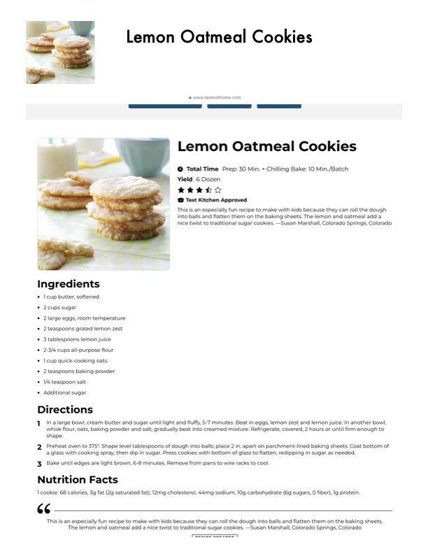

Lemon Oatmeal Cookies

Original cookbook page 769
Ingredients
- '* 1cup butter, softened
- * 2cups sugar
- * 2 large eggs, room temperature
- * 2 teaspoons grated lemon zest
- * 3 tablespoons lemon juice
- * 2-3/4 cups all-purpose flour
- * 1cup quick-cooking oats
- * 2 teaspoons baking powder
- * 14 teaspoon salt
- * Additional sugar
Instructions
- Lemon Oatmeal Cookies @ wwwtasteofhome.com Lemon Oatmeal C« {@ Test Kitchen Approved This is an especially fun recipe to make with kids bec into balls and flatten them on the baking sheets. The nice twist to traditional sugar cookies. —Susan Marst
- Inalarge bowl, cream butter and sugar until light and fluffy, 5-7 minutes. Beat in eggs, lemon zest and I whisk flour, oats, baking powder and salt; gradually beat into creamed mixture. Refrigerate, covered, 2 t shape.
- Preheat oven to 375°. Shape level tablespoons of dough into balls; place 2 in. apart on parchment-lined I a glass with cooking spray, then dip in sugar. Press cookies with bottom of glass to flatten, redipping in
- Bake until edges are light brown, 6-8 minutes. Remove from pans to wire racks to cool. Nutrition Facts 1 cookie: 68 calories, 3g fat (2g saturated fat), 12mg cholesterol, 44mg sodium, 10g carbohydrate (6g sugars, This is an especially fun recipe to make with kids because they can roll the dough into balls and flatten The lemon and oatmeal add a nice twist to traditional sugar cookies. Susan Marshall, Colorad
Recipe #769 from collection